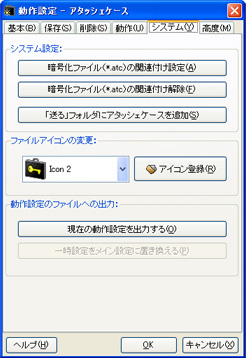

アタッシェケースとの関連付けや、ファイルアイコンの変更などシステム（Windows）に関わる設定を行えます。

- 暗号化ファイル（*.atc）の関連付け設定
ボタンを押すことで別のプログラム（AtcSetup.exe）が呼び出されて、Windowsのファイルシステムにアタッシェケースファイル（*.atc）を関連付けします。
ただし、WindowsNT/2000/XPにおいて制限ユーザーなどでログオンしていると、この設定は有効になりません。関連付けを有効にしたい場合は、一度管理者権限にしてから行う必要があります。
また、Vistaの場合においても管理者権限で実行する必要があります。
- 暗号化ファイル（*.atc）の関連付け解除
ボタンを押すことで別のプログラム（AtcSetup.exe）が呼び出されて、Windowsのファイルシステムからアタッシェケースファイル（*.atc）の関連付けを解除します。
ただし、WindowsNT/2000/XPにおいて制限ユーザーなどでログオンしていると、解除されません。
また、Vistaの場合においても管理者権限で実行する必要があります。
- 「送る」フォルダにアタッシェケースを追加
ボタンを押すことで、Windowsの「送る（SendTo）」フォルダにアタッシェケースのショートカットファイルを追加します。ファイルを右クリックしたときに出る「送る」メニューに入ります。
- ファイルアイコンの変更
デフォルトの関連付けられたアタッシェケースファイル（*.atc）のアイコンを変更することができます。
任意のアイコンファイルをユーザー自身が読み込ませて設定することもできます。鍵付きの、いかにも暗号化ファイルでございます、という現在のアイコンから、たとえばテキストファイルアイコンにしたり、画像ファイルアイコン等にすれば、「暗号化して隠している」ということさえも第三者に知られることがなくなります。
- 動作設定の保存
- 現在の動作設定を出力する
現在の動作設定を、コマンドラインオプションとして、INIファイル、バッチファイル、テキストファイルなどに出力して保存することができます。別スクリプトファイルなどを作成するときのベースとして使えます。
なお、INIファイルとして出力し、実行ファイルやカレントディレクトリに置くことで、一時設定でアタッシェケースを起動することできます。
→詳しくは、「.INIファイルの活用方法」のページを参照ください。
- 一時設定をメイン設定に置き換える
コマンドラインオプションから起動したときの一時設定を、メインの設定に置き換え、保存します。
ただし、保存されるタイミングはアタッシェケースが終了したときです。
ちなみに、通常起動したときにはボタンは無効になっています（押せません）。
Created with the Personal Edition of HelpNDoc: Free Web Help generator